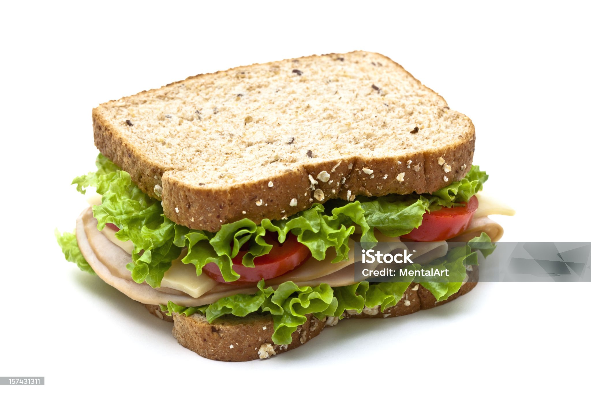

Sandwich

Description
This is a sandwich. I have eaten variations of it before.
The recipe is from a food recipe site where peeps upload their
food making techniques for other peeps to learn. All made possible by
communication technologies called internet, browser, server, webpages
and domains and ips.
Ingredients
- 2 skinless, boneless chicken breast halves
- 2 tablespoons barbeque sauce
- 4 slices bacon
- 2 hoagie rolls, split lengthwise
- 2 tablespoons Ranch dressing
- 4 slices Swiss cheese
- 1 small avocado - peeled, pitted and diced
Instructions
- Preheat oven to 375 degrees F (190 degrees C). Coat a baking dish with cooking spray. Brush both sides of each chicken breast with barbeque sauce and place in the baking dish. Top each breast with 2 slices bacon.
- Bake chicken 25 minutes in the preheated oven, until juices run clear. Drain bacon strips on paper towels, and slice breasts in half lengthwise.
- Heat the oven broiler. Spread both halves of each hoagie roll with Ranch dressing. Place 2 breast halves on one half of each roll. Place 2 strips of bacon on each remaining roll half. Top each half with 1 slice Swiss cheese.
- Arrange sandwich halves on the baking sheet, and broil 2 to 5 minutes, until the cheese is melted and bubbly. Layer chicken halves of sandwiches with avocado slices, and top with bacon halves to serve.